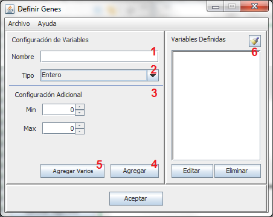

Al presionar sobre el boton Definir Genes dentro de la sección Definir Cromosoma, se abre una ventana como la que se muestra:
Cada número implica un paso en la definición de los genes
Definir Nombre del Gen
Definir Tipo del Gen
Configuración Adicional
Agregar
Agregar Varios
Variables Definidas